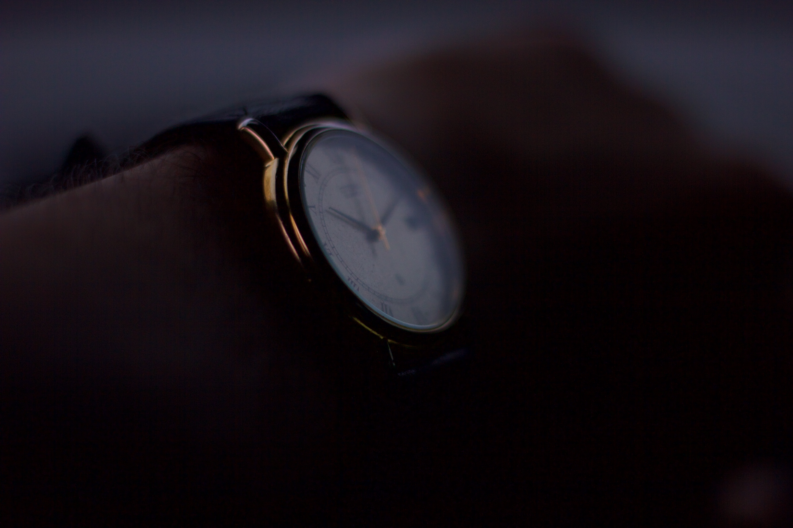

About Me
My Journey
Currently, I am a student at the University of Toronto pursuing a Bachelor's of Applied Science and Engineering through the Mechanical Engineering program. My time within the program has allowed me to develop various skills that will aid me in engineering-related careers. I have also obtained plenty of relevant experience working with others through volunteering and high school involvement. I would love to make new connections, and gain more experience in the field I am pursuing.
Focus Areas
I am pursuing the Mechatronics and Manufacturing streams within Mechanical Engineering. My work with SolidWorks and construction clearly gives me valuable insight into what these two paths may look like. My work in Engineering Strategies and Practice taught me a lot about documentation while my part-time work at Dairy Queen gave me a glimpse into industry and business, which is useful in my pursuit of a business minor.
Creative Pursuits
Outside of my engineering-related experience, I have a love for photography, and it is one of my favourite creative outlets. Throughout this portfolio, you can see works from both parts of my world, my best photos and my best projects. I also enjoy creative writing, cinematography, and design. I have shared three of my favourite pieces below.
"Head in the Clouds"
Taken by me, Modeled by me.

"Time is Ticking"
Extreme focus on one particular subject.
"Jack of all Trades"
A photo relying on symbolism.